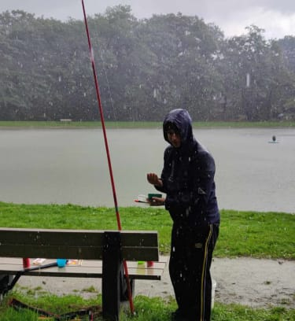

OVER MIJ
Mijn naam is Alexis Yavarouski, ik ben 17 jaar en geboren op 30 maart 2007. In mijn vrije tijd heb ik een brede waaier aan interesses. Ik hou van Thai boksen, een sport die zowel mijn kracht als mijn discipline uitdaagt. Daarnaast ben ik een fanatieke gamer en steek ik ook graag tijd in coderen, waar ik mijn creativiteit en probleemoplossend vermogen kan inzetten. Deze mix van activiteiten houdt mij scherp, actief en altijd leergierig.
RUSSISCH ORTHODOX CHRISTEN
Ik zit momenteel in het zesde middelbaar aan TSM Mechelen, waar ik de richting Crossmedia volg. Dit is een boeiende studierichting waarin technologie, creativiteit en communicatie samenkomen. Van grafisch ontwerp tot audiovisuele producties en digitale media, ik leer vaardigheden die zowel uitdagend als toekomstgericht zijn.
Dankzij deze opleiding krijg ik de kans om mijn interesses in technologie en creatie verder te ontwikkelen en te experimenteren met nieuwe tools.
Ik ben veelzijdig en kan je op verschillende manieren helpen. Als je technische hulp nodig hebt, kan ik bijvoorbeeld ondersteunen bij het coderen of oplossen van IT-gerelateerde problemen.
Heb je een creatief project, zoals het maken van een presentatie of het ontwerpen van iets digitaal, dan kan ik meedenken en bijdragen. Daarnaast kan ik ook advies geven of sparren over games, sport of andere onderwerpen waarin ik me thuis voel. Samen komen we tot een oplossing!